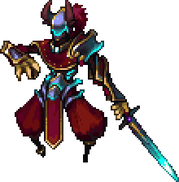
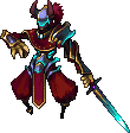

The Calamity lore is simply the story of the world, told to us, as of right now, by Yharim, a prominent figure of the mod’s story that
we will dive into. Several times, the Calamity lore has been rewritten to gradually become a more cohesive narrative, but as of recent Update
the Developers have integrated into the game what they consider to be the definitive version of the story, and that it will not be changed in the future.
That said, the lore is still subject to change. As such, this does not mean it will contain every detail of the story, as much of it is still shrouded
in mystery. As of now, we have the outline of the story, the names of the main figures, and the core elements that will be expanded upon in the future.
You could be left with some confusion as to some aspects.
With that said, almost everything else that is in the game is canon, that is, exists within the story of Calamity. If you see anything in the website
that does not match what is ingame, then either it has not been updated yet. Of course, however, the developers are only human, and some outdated
information may be still left in the game. If you see something that directly conflicts with the Calamity lore, then please, bring this up in the
Lore Discussion channel (Forum). As for this information, if anything is outdated I ask you to tell us about it, preferably DMs on Discord.
.webp) CALAMITY MOD REVIEW 
CALAMITY MOD REVIEW 